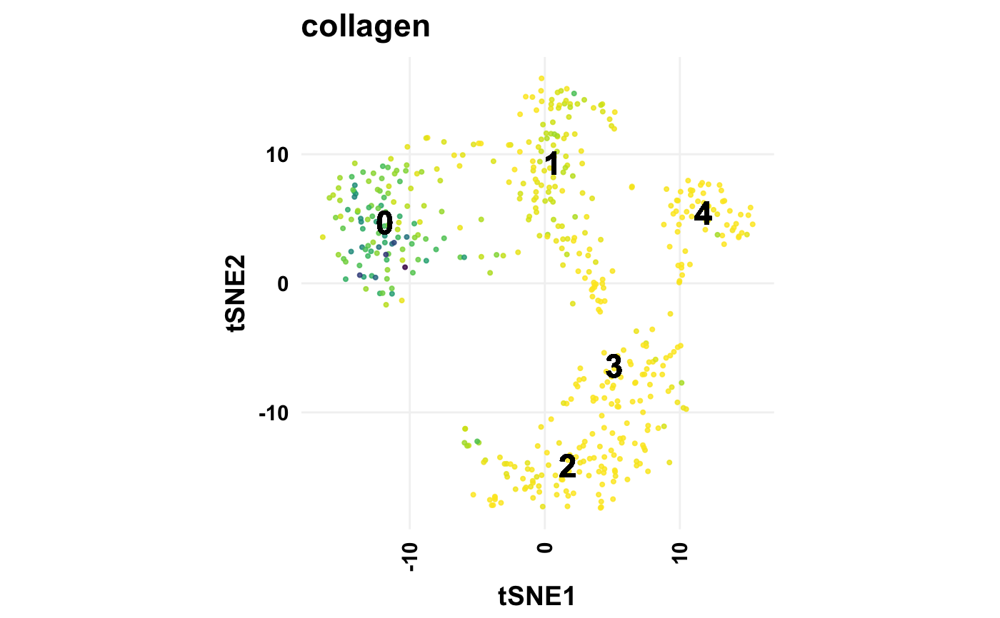
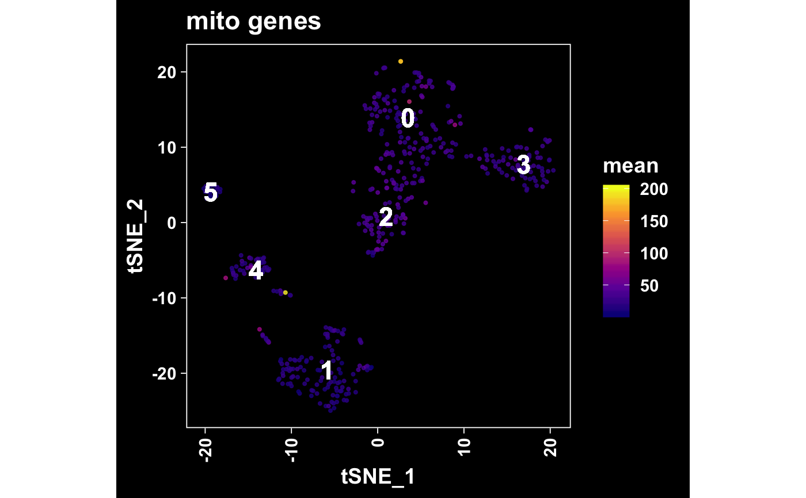
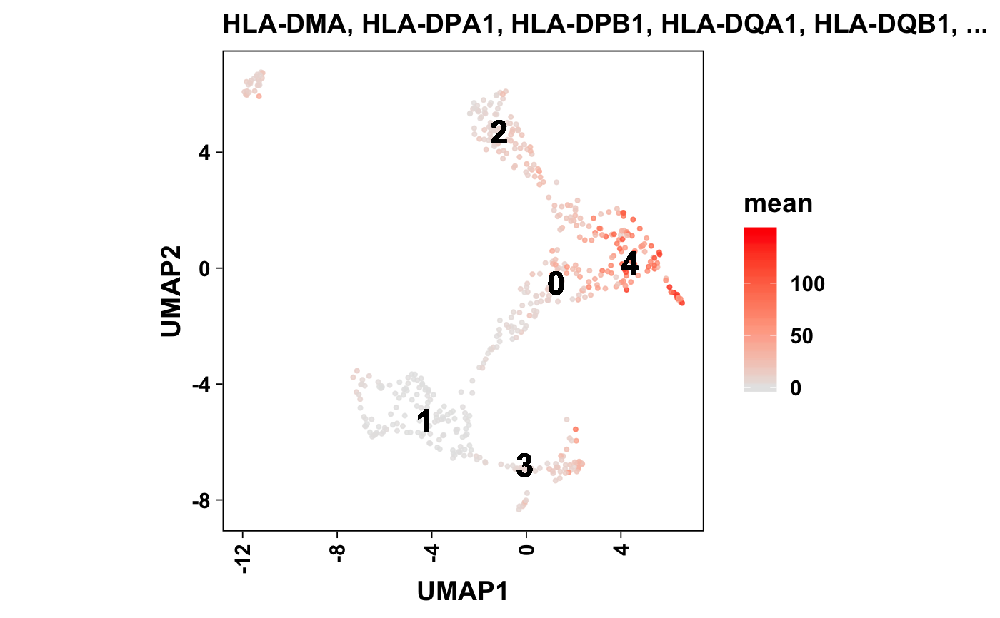
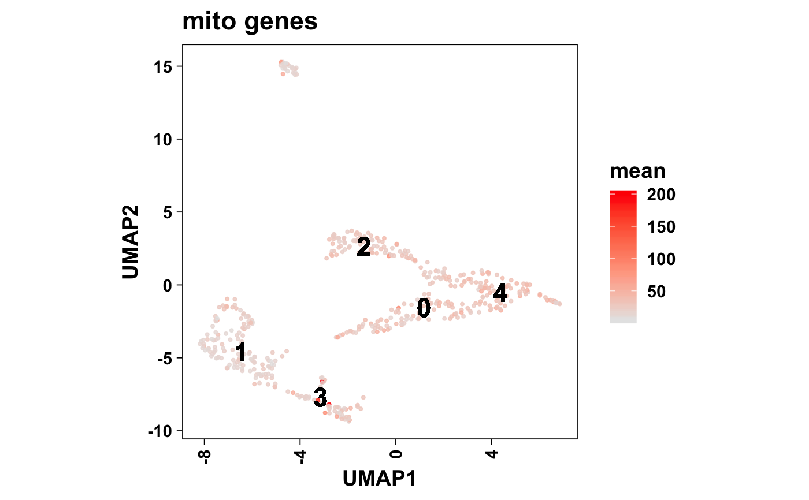
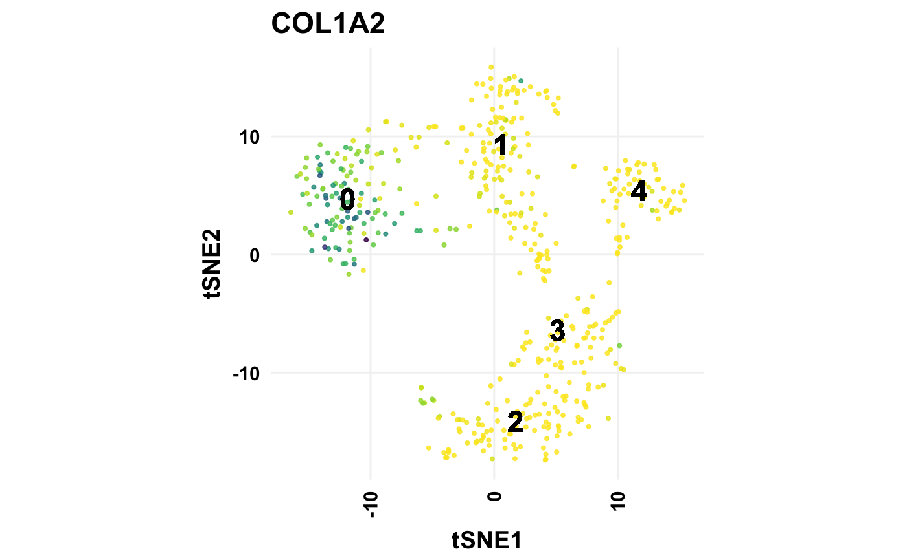
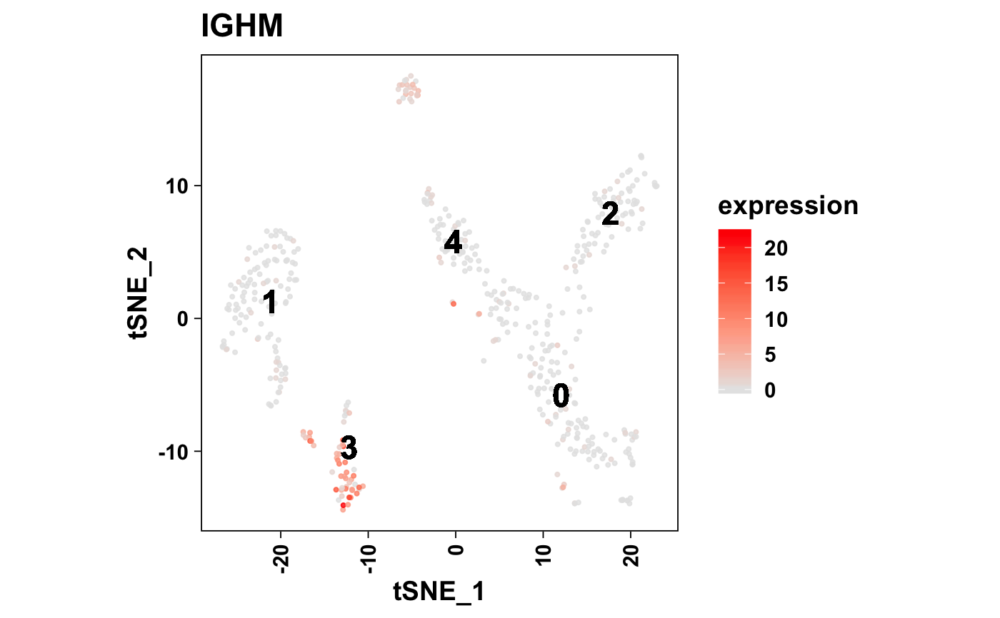
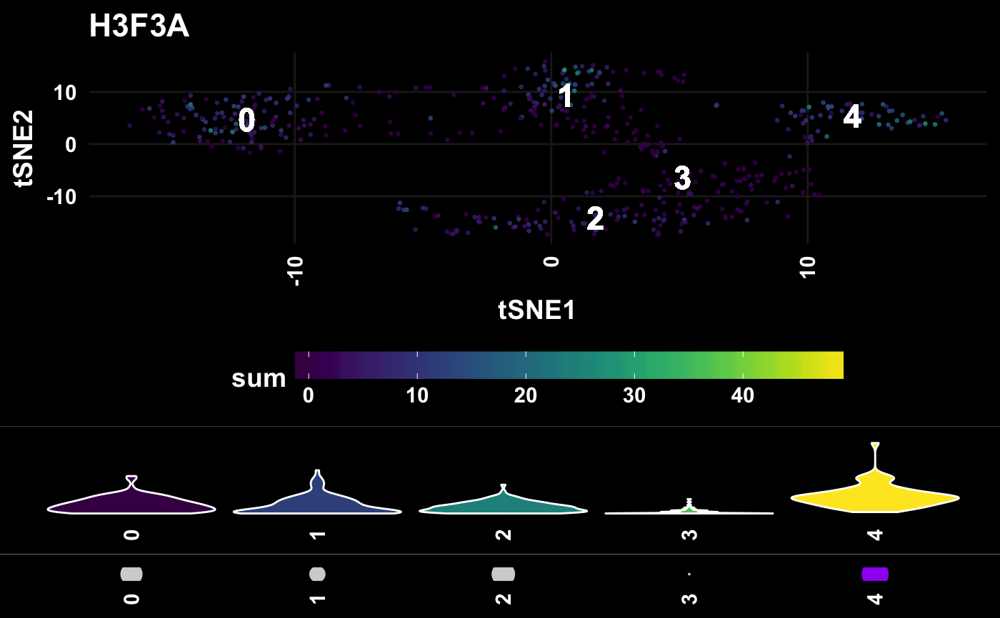

Plot gene expression per cell in multiple formats:
t-SNE plot
Violin plot
Ridgeline plot
Dot plot
plotMarker(object, ...) plotMarkers(object, ...) # S4 method for seurat plotMarker(object, gene, dark = TRUE, return = c("grid", "list"), ...) # S4 method for seurat plotMarkers(object, genes, headerLevel = 2L, ...)
| object | Object. |
|---|---|
| ... | Additional arguments. |
| gene | Gene identifier. Must intersect with |
| dark | Plot against a dark background using
|
| return | Return type. Uses |
| genes | Gene identifiers. Must match the rownames of the object. |
| headerLevel | R Markdown header level. |
Show graphical output. Invisibly return ggplot list.
plotMarkerTSNE().
Other Clustering Functions: cellTypesPerCluster,
knownMarkersDetected,
plotCellTypesPerCluster,
plotFeatureTSNE,
plotKnownMarkersDetected,
plotMarkerTSNE, plotPCA,
plotPCElbow, plotTSNE,
plotTopMarkers,
sanitizeMarkers, topMarkers
# seurat === top <- topMarkers(all_markers_small, n = 1L) genes <- pull(top, "rowname") # Individual gene gene <- genes[[1L]] plotMarker(seurat_small, gene = gene, dark = TRUE)plotMarker(seurat_small, gene = gene, dark = FALSE)# Multiple genes plotMarkers(seurat_small, genes = genes)#> #> #> ## COL1A2 #>#> #> #> ## S100A10 #>#> #> #> ## MYL4 #>#> #> #> ## MT.ATP6 #>#> #> #> ## H3F3A #>